O princípio vital. Desde as origens, o ser humano intui que há algo nele que transcende a matéria — algo que anima, pensa, quer e permanece.
Desde que existe o Homo sapiens, enterramos os mortos como forma de mantê-los próximos de nós ou de libertar a sua alma da "prisão corporal". É uma das manifestações mais claras de fé na existência e sobrevivência — ou eternidade — da alma.
As diversas religiões panteístas consideram que cada ser humano teria uma ou várias almas, desde uma só de natureza puramente espiritual até várias que correspondem pouco mais ou menos aos princípios vegetativo, sensitivo e espiritual descritos por Aristóteles.
Platão considera a alma como "maximamente semelhante às formas" eternas e imutáveis, e "o corpo às coisas que vemos" (Fédon 79a). Na República, compara a alma a um carro, no qual o logístikon é o condutor.
No período helenístico, teve ampla divulgação o Mito de Eros e Psyché, em que o deus do amor se apaixona pela Alma humana. A alma costuma ser representada com asas de borboleta, porque este é um dos significados de psiqué.
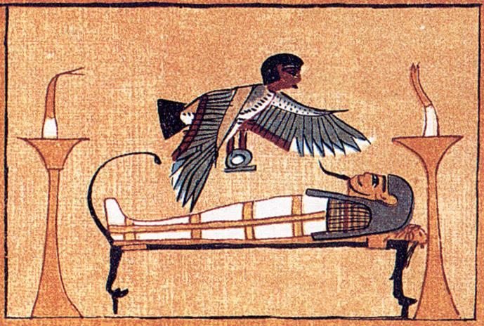
"O Príncipe" da Grotta de Arene Candide, cultura gravetiana, ca. 21.500 a.C., Museo Archeologico di Pegli, Liguria. Desde as origens, enterrar os mortos revela a crença num princípio vital que transcende o corpo.
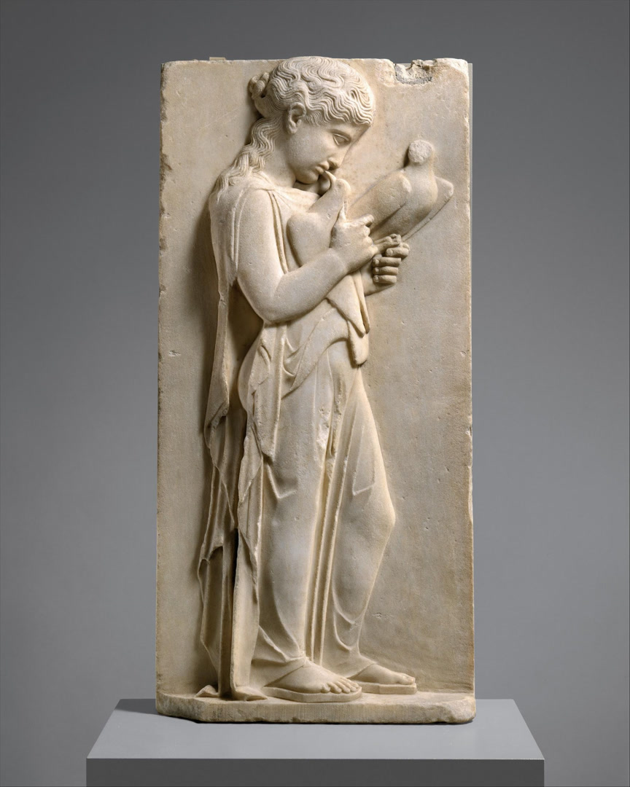
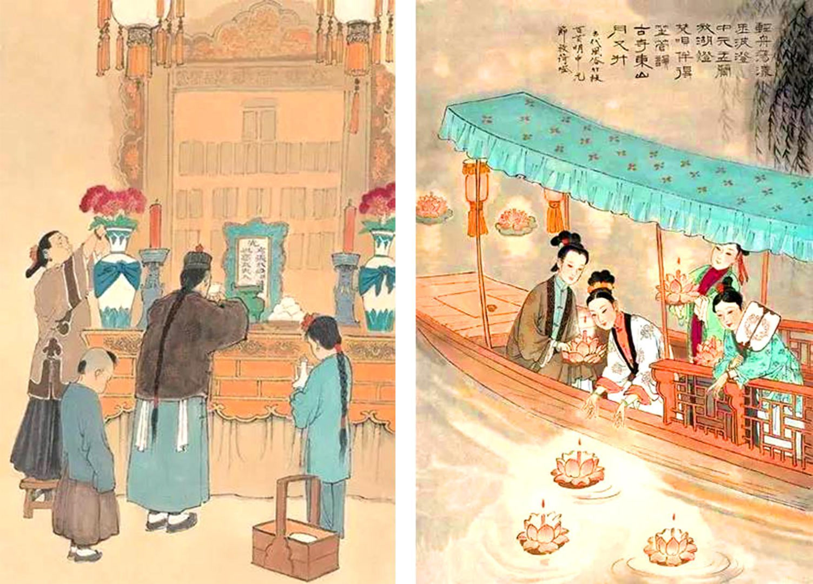
O ba (alma) do morto paira sobre a sua múmia com um anel shen (promessa de eternidade) — facsímile de E. A. Wallis Budge, Livro dos mortos de Ani, ca. 1300 a.C., British Museum.
Estela funerária para o túmulo de uma menina, cultura grega, ca. 450–440 a.C., The Met, New York.
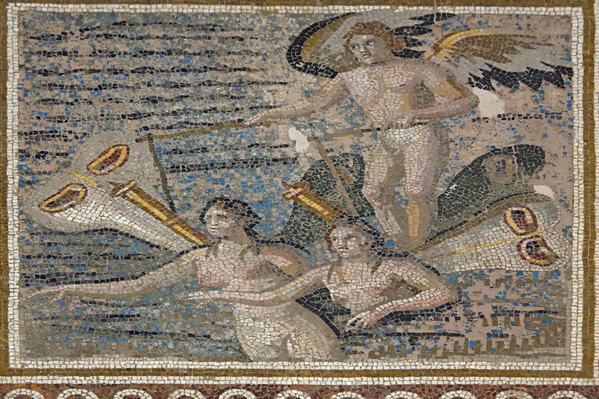
O festival Zhong Yuan, dedicado à veneração dos ancestrais. O altar dedicado aos mortos na casa da família, e as velas que se punham a flutuar em rios ou lagoas, para ajudar os espíritos a encontrar o caminho de casa.
Ilustrações da obra O lotus dourado, de Xiaoxiaosheng, acrescentadas no séc. XIX.
Desde que existe o Homo sapiens, enterramos os mortos como forma de mantê-los próximos de nós ou de libertar a sua alma da "prisão corporal".
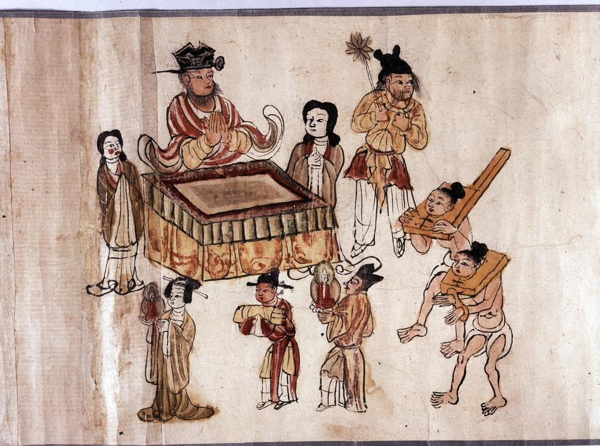
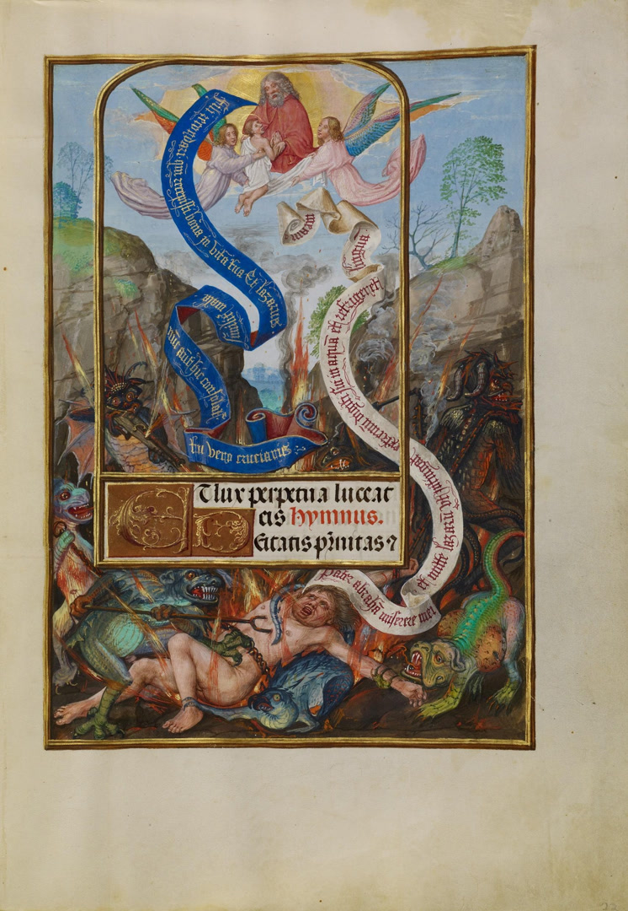
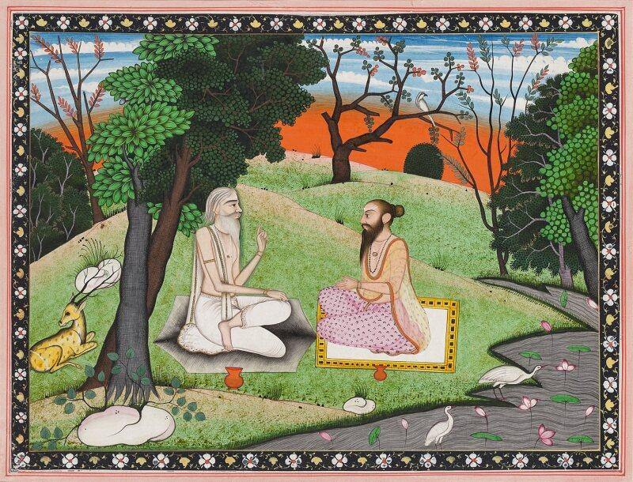
Das religiões panteístas à filosofia grega, a alma foi compreendida de modos muito diversos — mas sempre como aquilo que distingue o vivo do inerte.
Epicuro e as versões mais materialistas do panteísmo tendem a considerar a alma como "uma forma sutil de corpo, distribuído por todo ele, como ar com uma mistura de calor". Esta ideia sobrevive nas seitas esotéricas ocidentais.
Platão, na República (439b-d), compara a alma a um carro: o logístikon é a parte mais nobre (o condutor), e as partes apetitivas — timoéikon (irascibilidade) e epithymithikon (concupiscência) — são as que a movem.
No Mito de Eros e Psyché, o deus do amor (Eros) se apaixona pela Alma humana e acaba casando-se com ela. A alma costuma ser representada com asas de borboleta, porque este é um dos significados de psiqué.
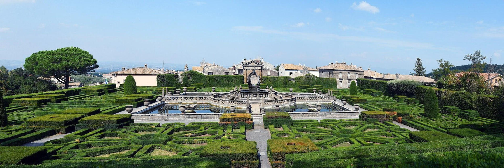
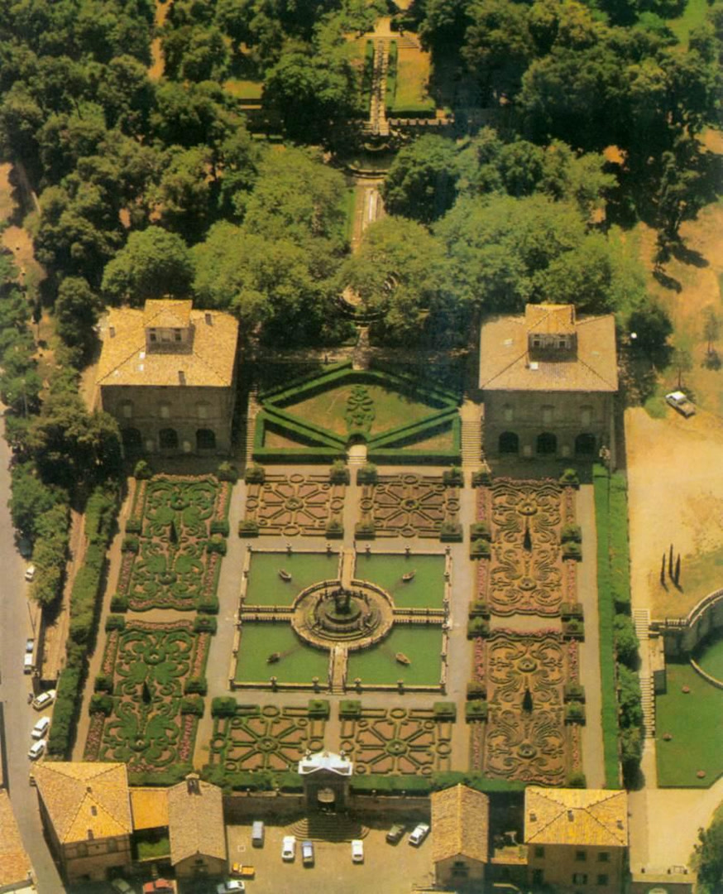
Para Aristóteles, além de princípio de vida, "a alma é a forma do vivente", isto é, a sua essência, a estrutura lógica que torna o ser humano o que ele é, reunindo as funções vegetativa, sensitiva e espiritual.
São Tomás de Aquino adota a posição aristotélica, mas acrescenta uma correção decisiva.
O ser humano é uno, simultaneamente material e espiritual, ao contrário da teoria platônica que o considera um composto de duas substâncias distintas entre si, a alma e o corpo.
A alma, ao mesmo tempo em que é a forma do vivente, é uma substância imaterial (ou seja, espiritual, análoga aos anjos e demônios).
Tomás harmoniza o conceito filosófico da alma com o da tradição judaica e cristã: "Com sua abertura à verdade e à beleza, com seu senso do bem moral, com sua liberdade e a voz de sua consciência, com sua aspiração ao infinito e à felicidade, o homem percebe sinais de sua alma espiritual."
Como "semente de eternidade que leva dentro de si, irredutível à só matéria", sua alma não pode ter origem senão em Deus.
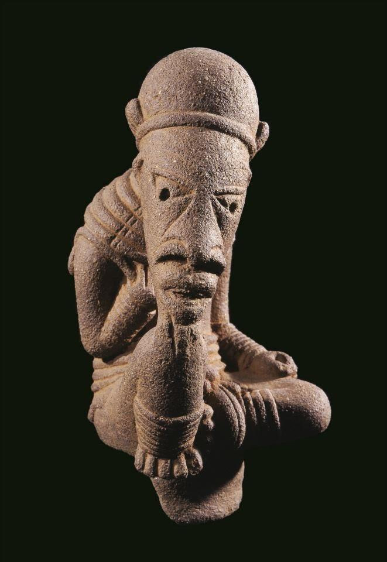
Descartes, a partir do Cogito ("Se eu duvido, penso; se penso, existo"), "prova" a existência da alma como res cogitans, "coisa pensante". Depois tem de fazer malabarismos para provar a existência do corpo, a res extensa.
Na concepção cartesiana e no neoplatonismo que permeia a modernidade, as almas seriam os entes propriamente vivos e os corpos seriam como fantoches manipulados pelas suas almas.
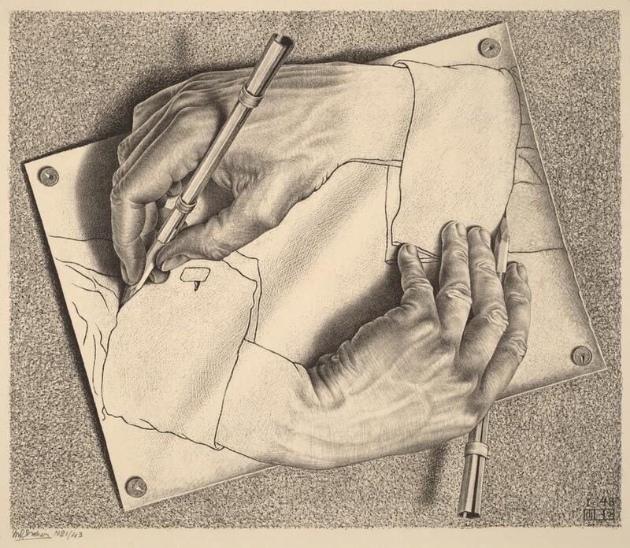
Os jardins renascentistas costumavam ser organizados em três patamares: o superior, da casa, representava o céu; o intermediário, um labirinto, a alma humana; e o inferior, geralmente um bosque, representava a natureza original.
Jardins de Villa Lante, atribs. a Jacopo Barozzi da Vignola, ca. 1560–90, Bagnaia, Viterbo.
A vertente científico-materialista considera a alma um "epifenômeno" (propriedade, manifestação) da matéria.
Isso levou a uma progressiva incompreensão da natureza e realidade da alma, substituída por termos mal definidos como "cérebro", "mente", "consciência", ego, self, "psique", "personalidade", "interioridade", "identidade"...
Esses termos captam aspectos, faculdades ou atividades do conceito tomista de "alma", mas pelo seu caráter parcial obscurecem a realidade unitária e espiritual que a alma é.
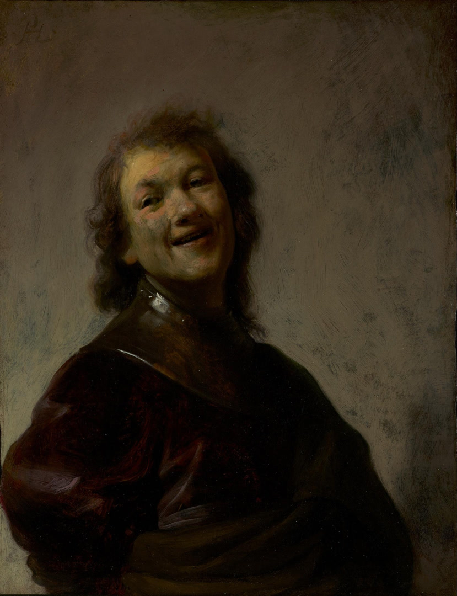
O fato de conhecermos e memorizarmos conceitos abstratos e universais (o número pi, a humanidade, o ser...), e de raciocinarmos logicamente com eles, exige um princípio igualmente abstrato e imaterial para realizar essas operações.
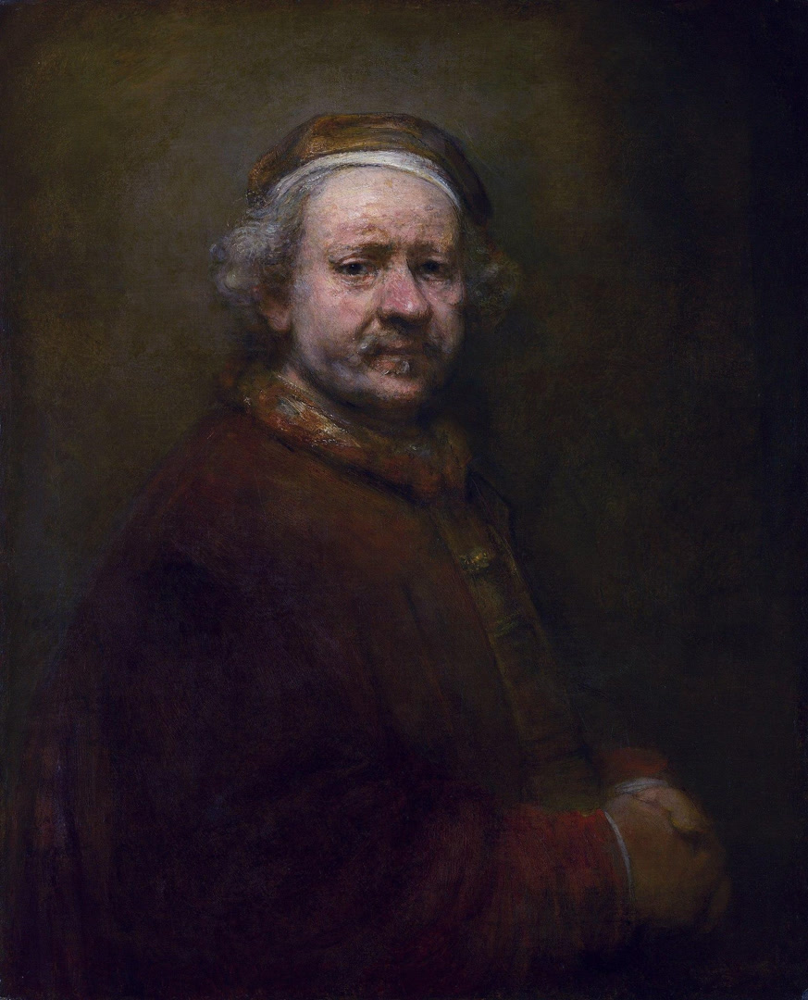
A reflexividade que experimentamos (não só sei, mas sei que sei), e que dá origem à consciência de si, pressupõe uma substância espiritual, capaz de revelar-se por inteiro a si mesma.
Mãos desenhando, M.C. Escher, 1948, National Gallery of Art, Washington, DC.
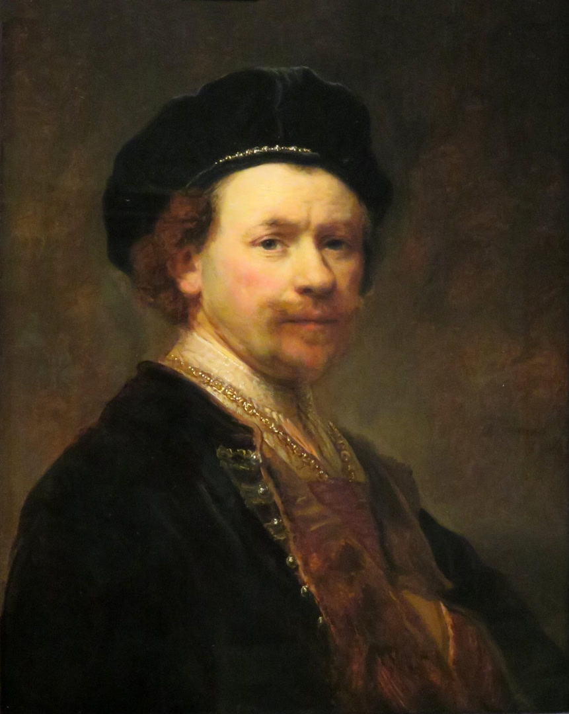
Apesar de as sensações, imagens, raciocínios, emoções etc. se originarem em diversas partes do cérebro, o eu as experimenta como uma unidade. A alma é "uma só e mesma faculdade de entender, recordar e querer" (Tomás de Aquino, Coms. ao De Anima, III).
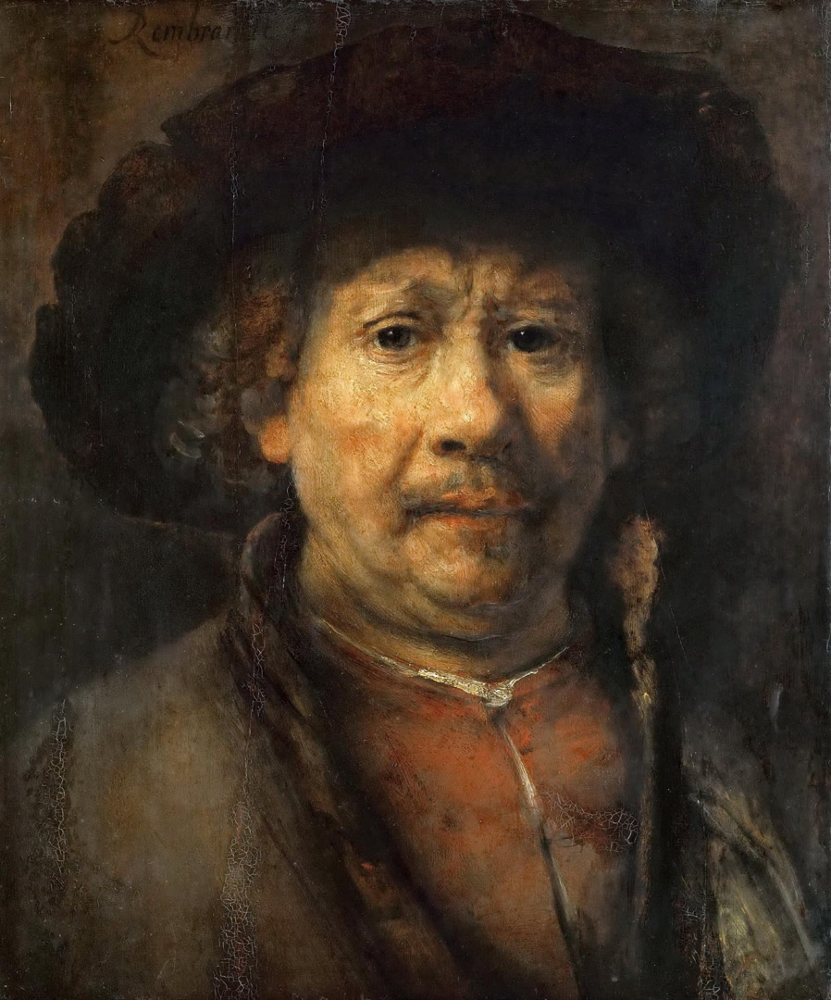
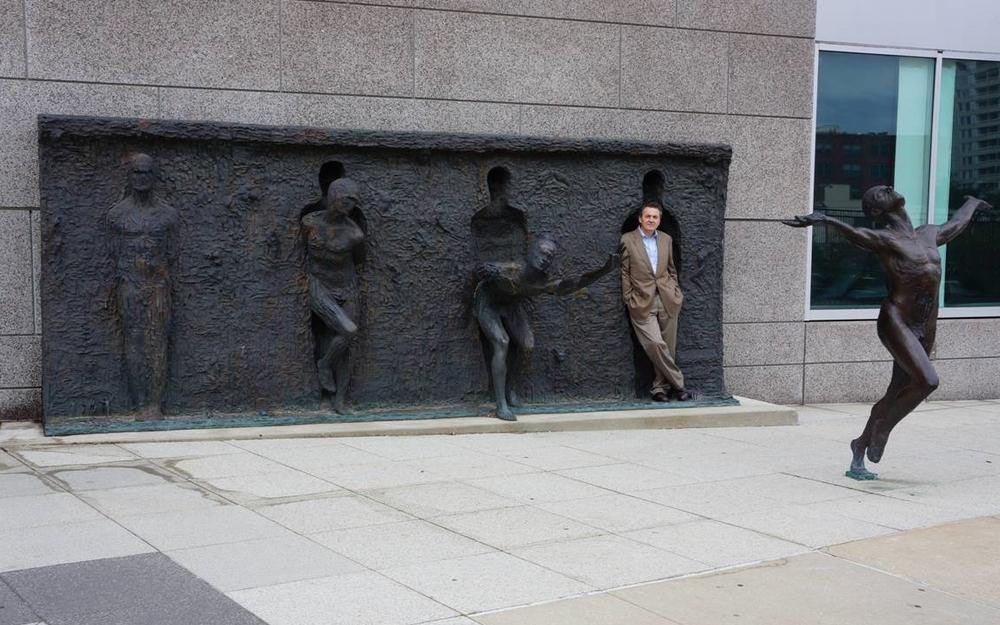
Mais dois argumentos filosóficos que apontam para a existência de um princípio imaterial no ser humano.
A permanência do eu: embora o corpo esteja em constante fluxo de renovação, reconhecemo-nos como a mesma pessoa ao longo de todos os momentos da vida.
A liberdade implica que existe em nós de um princípio que não depende da causalidade física, química e biológica.
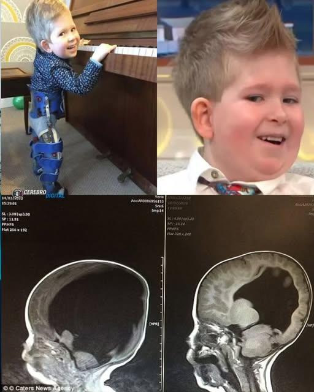
A tempestade dentro de nós, Karl Nussbaum. A relação entre cérebro e alma permanece um dos maiores mistérios — e os paradoxos científicos desafiam qualquer explicação puramente materialista.
Diversos fenômenos observados pela neurociência desafiam a tese de que a alma é mero "epifenômeno" do cérebro.
Pacientes com hidrocefalia que funcionam de maneira quase normal, apesar de terem apenas uma fração do tecido cerebral.
Lucidez terminal em pacientes com Alzheimer, "Síndrome de Lázaro" e EQMs (Adrian Owen, Bruce Greyson etc.).
Em pacientes epilépticos, podem-se observar ataques que consistem em movimentos, percepções, memórias, emoções e alucinações descontroladas, mas nunca em crises intelectuais ou volitivas. Não há nenhuma parte do cérebro responsável pelo pensamento abstrato.
Pacientes que passaram por uma operação de desconexão do cérebro apresentam pequenas disfunções motoras e percepção dividida, mas nunca intelectuais nem na consciência (Roger Sperry, Justine Sergent e Iair Pinto).
Os processos que conduzem a uma emoção ou a um desejo podem ser observados como atividade neuronal, mas a decisão de não realizar a ação desejada não corresponde a nenhum processo neuronal.
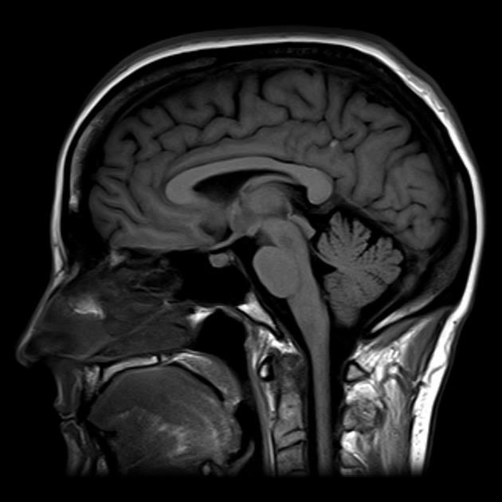
N.W., nascido com spina bifida e apenas 2% do tecido cerebral, aos 3 anos de idade tinha desenvolvido 80% da sua capacidade cerebral, e posteriormente aprendeu a ler e escrever e sonha com andar.
Doc. The Boy Who Grew a New Brain.
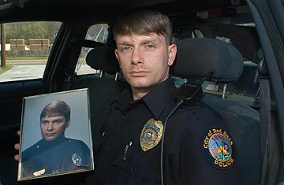
Gary Dockery (1953–1997), ferido na cabeça por um criminoso em 1988, permaneceu em estado vegetativo por quase oito anos. Em 1996, emergiu do coma aparentemente normal e conversou com perfeita lucidez com os familiares durante um dia inteiro; no segundo dia, respondia com monossílabos e no terceiro retornou ao estado vegetativo. Morreu pouco tempo depois.
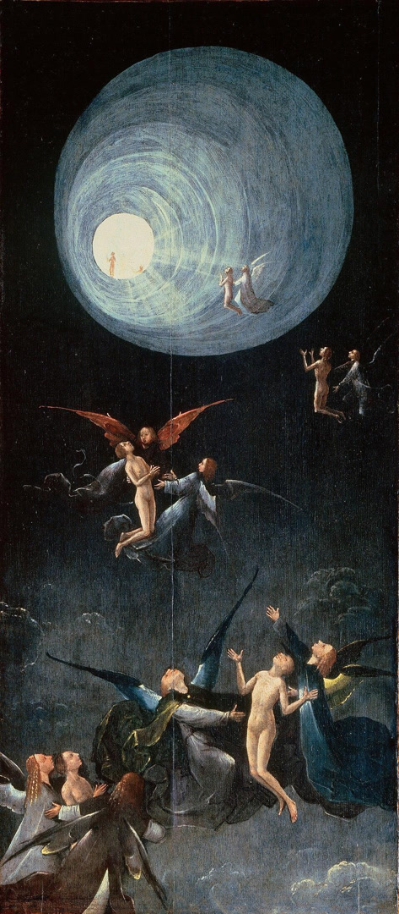
A alma, sendo espiritual, não tem partes; logo, não pode decompor-se nem morrer.
A ascensão dos Bem-aventurados, Hieronymus Bosch, ca. 1500–04, Galleria dell'Accademia, Veneza.
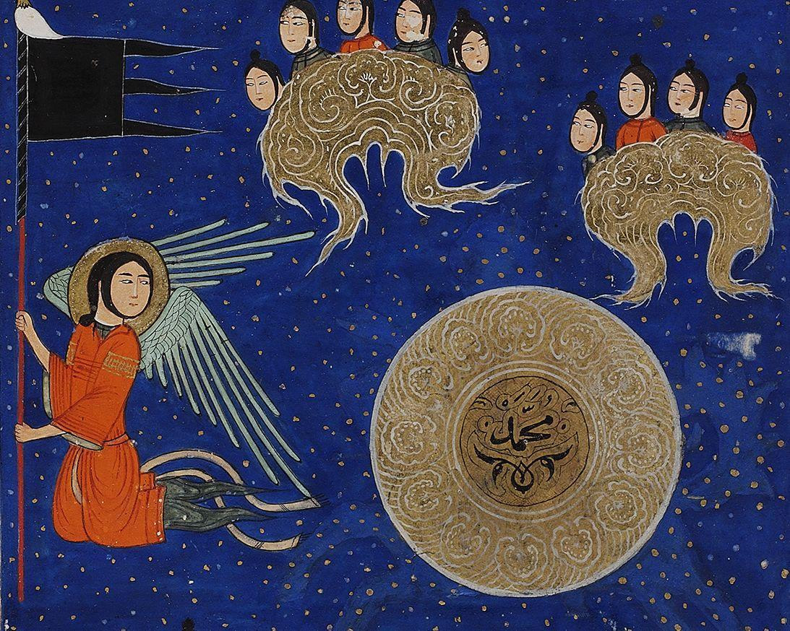
A alma, sendo espiritual, não tem partes — logo, não pode decompor-se nem morrer. É sempiterna.
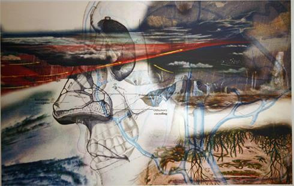
A alma paira sobre o corpo, William Blake, ca. 1808 — ilustração para o poema The Grave, de Robert Blairs.
Cada ser humano teria uma ou várias almas, correspondentes aos princípios vegetativo, sensitivo e espiritual. A alma muitas vezes é concebida como "matéria sutil" — ar com mistura de calor.
A alma é "maximamente semelhante às formas" eternas e imutáveis. Na República, a alma é como um carro: o logístikon (razão) conduz as partes apetitivas.
A alma é maximamente semelhante às formas eternas e imutáveis, e o corpo às coisas que vemos.
A alma é a forma do vivente — a estrutura lógica que estrutura o ser vivo e lhe permite ser vivo. Não é algo separável do corpo: ela o molda como um todo.
A alma é, ao mesmo tempo, forma do vivente e substância imaterial. Harmoniza Aristóteles com a tradição cristã: a alma é espiritual, sobrevive ao corpo e tem origem em Deus.
A partir do Cogito, "prova" a alma como res cogitans (coisa pensante), separada do corpo (res extensa). O corpo seria um fantoche manipulado pela alma.
Pensamento abstrato, reflexividade, liberdade, consciência de si. Exclusiva do ser humano — princípio imaterial que confere substancialidade ao corpo.
Percepção sensorial, emoções, memória, movimento. Comum aos animais — faculdades corpóreas ligadas ao sistema nervoso e ao cérebro.
Nutrição, crescimento, reprodução. Comum a todos os seres vivos — o nível mais básico do princípio vital, a capacidade de autodesenvolvimento.
Conhecemos e memorizamos universais (o número pi, a humanidade, o ser). Para "guardar" algo imaterial, é preciso um intelecto igualmente imaterial — como uma fruteira material guarda frutas materiais.
Não só sei, mas sei que sei. Estamos permanentemente revelados a nós mesmos — nenhum ente material se deixa conhecer totalmente. Só um ser espiritual pode "dobrar-se integralmente sobre si mesmo".
Sensações, raciocínios e emoções originam-se em partes diversas do cérebro, mas o eu as experimenta como uma coisa só. "Uma só e mesma faculdade de entender, recordar e querer" (Tomás de Aquino).
O corpo está em fluxo constante de renovação — provavelmente nenhum átomo do nascimento permanece em nós. No entanto, reconhecemo-nos como a mesma pessoa ao longo de toda a vida.
Temos a consciência interna permanente de que somos a fonte das nossas decisões. Mesmo impelidos por impulsos, sabemos que podemos resistir. A liberdade implica um princípio que não depende da causalidade física, química e biológica.
Pacientes com apenas 2% do tecido cerebral apresentam desenvolvimento quase normal. Se o cérebro fosse a fonte da personalidade, isso seria impossível.
Pacientes com Alzheimer avançado ou em estado vegetativo durante anos recuperam plena consciência e lucidez pouco antes da morte.
Emoções e desejos aparecem como atividade neuronal, mas a decisão de não agir não corresponde a nenhum processo cerebral observável.